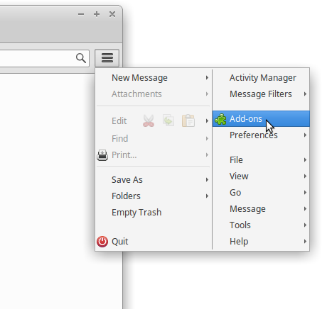
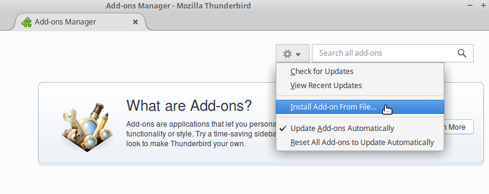
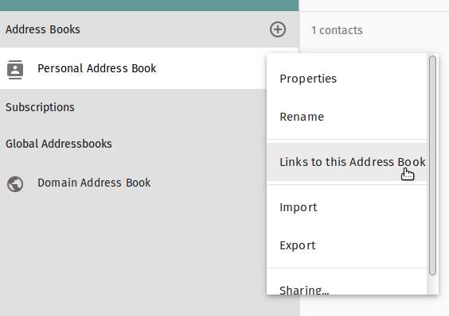
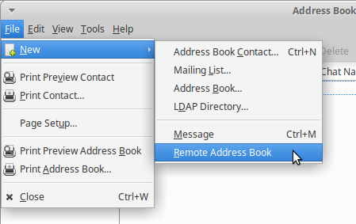
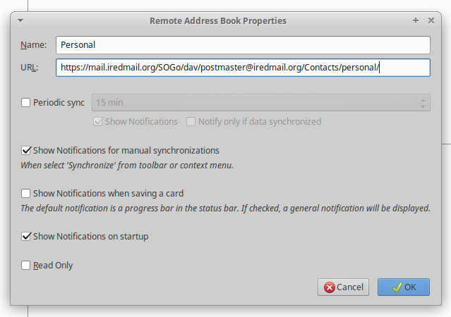
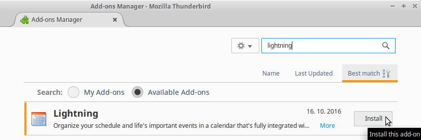
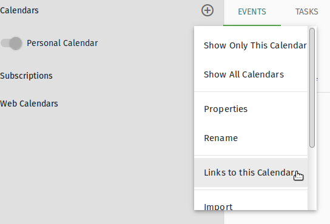
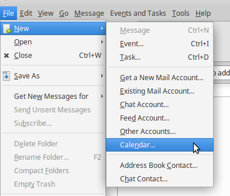
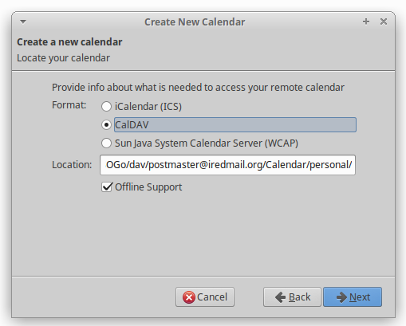

SOGo Connector extention provides integration of Mozilla Thunderbird with the SOGo groupware solution. It does this by adding support for remote DAV address books and by adding features to be used along with the Lightning calendar extension.
Tools -> Add-ons
Click the gear icon and choose Install Add-on From File

Select the downloaded SOGo Connector xpi file to install it, then restart Thunderbird.
To use SOGo address book, we need to get the link of SOGo Address Book first.
Address Book on top-right cornerChoose the address book you want to sync (Personal Address Book is the
default one), click on 3 vertical dots, choose Link to this Address Book,
and copy CardDAV URL.
Note: Some old SOGo releases might use 127.0.0.1:20000 as server
address in the CardDAV URL, you must replace them by the real server
address like https://<your_server_name_or_ip>/SOGo.

Now launch Thunderbird:
Windows -> Address Book)File -> New -> Remote Address Book
Configure the Address Book Properties:
Name: SOGo Address Book name (you can use whatever name you like here)URL: insert link you got from SOGo above - like: https://<host>/SOGo/dav/<userName>/Contacts/personal/
Lightning is a calendar add-on for Thunderbird.
Launch Thunderbird, click menu: Tools -> Add-ons, Search "Lightning" and
install it.

Restart Thunderbird after installation.
To use SOGo calendar, we need to get the link of SOGo Calendar first.
Calendar on top-right cornerChoose the calendar you want to sync (Personal Calendar is the default one),
click on 3 vertical dots, choose Link to this Calendar and copy CalDAV URL.
Note: Some old SOGo releases might use 127.0.0.1:20000 as server
address in the CardDAV URL, you must replace them by the real server
address like https://<your_server_name_or_ip>/SOGo.

Launch Thunderbird to add SOGo calendar:
File ->
New -> Calendar, and choose On the Network for SOGo calendar:
On the Network page, choose format CalDAV, and paste the link of
SOGo calendar. for example, https://<host>/SOGo/dav/<userName>/Calendar/personal/
Continue to finish the
setup.